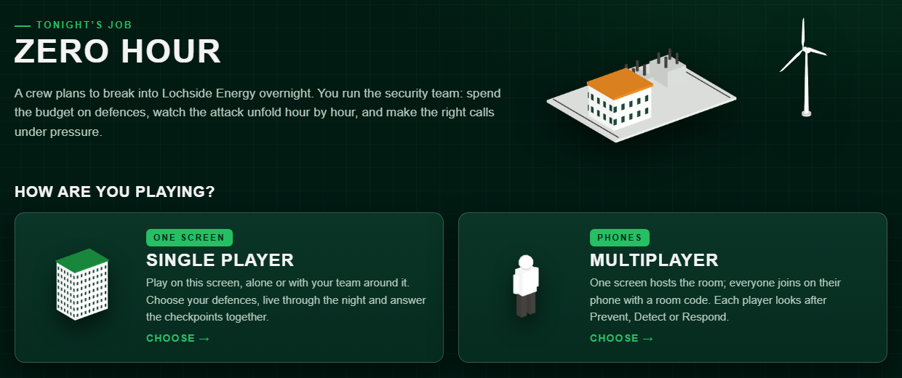

2nd place at StrathHack26 (ScottishPower cyber security challenge). Teams defend a fictional energy company through an overnight cyber attack, answering timed security questions on their phones.
- Every game rule lives in one pure reducer, so two phones buying at the same moment can never overspend a team's budget.
- Real-time sync over Server-Sent Events, with server-clock countdowns, and phones that drop out rejoin where they left off. Zero dependencies.
- 360+
node --testtests, including the shared-budget race and path-traversal hardening.